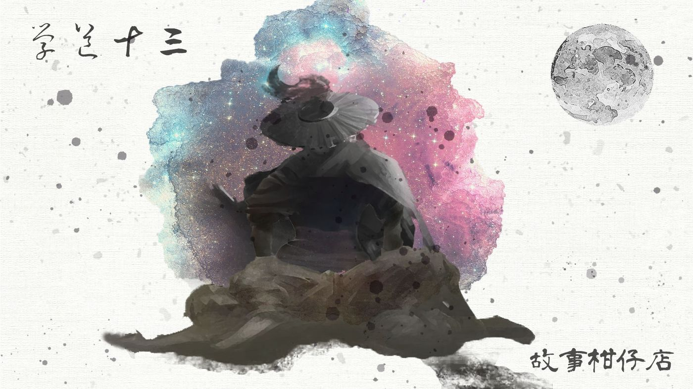
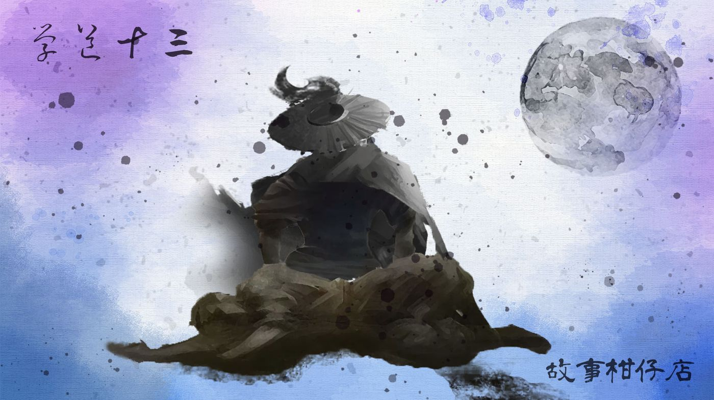
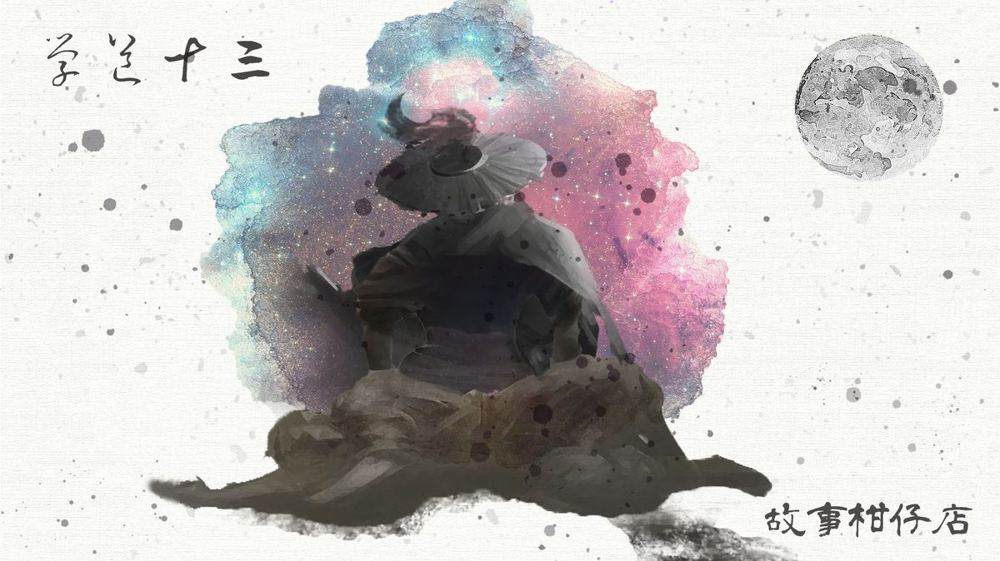

玄墨行者．學道（十三）

☯一章 學道（十三）☯
玄墨七者如今又齊聚內堂，但與拾兒出門前的氣氛截然不同，連最愛開玩笑的開陽及瑤光都鎖緊了眉頭，只有壁畫上兩位老者仍一派悠閒。天璣不發一語撫弄著醉妖弦，重新鎖緊繃斷的琴弦。
「老三的徒弟拾兒沒通過成年禮，現在身負重傷，如何是好？」天璇活動著下顎，原本方硬的腮骨更加暴突，活像隻不懷好意的青蛙。
「都躺三天三夜了，你這做師父的倒是很有信心。」天璇斜睨他一眼，「還是你已打算另找傳人？」
「老二，別人師徒的事，你插什麼嘴？」天樞出聲制止，撫著鬍髭深思一會才說，「栽個傳人曠日費時，也不能說換就換，但拾兒失敗了是事實。老三，你意思呢？」
說起來，拾兒重傷也算是天璣意料之事。他不是一般的孩子，注定多舛錯。幸而早做好了準備，拾兒倒在林間沒多久，天璣便趕到，將他揹回孤峰鎖在廂房內。
身上那些擦傷瘀血就不提了，檢視著拾兒臉龐幾乎綻裂見骨的殘皮掰肉，天璣不禁想，傷得也太重了些。婆娑鳥法力雖強，卻也不是濫殺無辜之流，看來，是拾兒先踩了人家的腳吧。
多說無益。天璣運氣凝神，劍指往拾兒脖子上的項鍊筆劃了幾下，藍玉髓發出淡淡波光，若有似無往拾兒傷處繚繞不斷，綻開撕裂的皮肉處，竟一點一滴長出新肉。
天璣知道他會好。只是需要幾天。
也因為如此，在現在的會議上，他提出了要求：
「拾兒隨我十八年，心性雖不定，但各方面天賦，在場師兄弟都是知道的。未能通過成年禮試煉，也是事實。為師不好偏袒，不如交由祖師判定。」
話說得客氣，但在場都聽得出來，天璣鐵了心要保拾兒。再說，祖師判定的變通方法，也是傳承多年的老規矩，實在沒有理由反駁。於是就這樣決定了：待拾兒清醒，再由祖師決定留或不留。
待在外廳的虹月急壞了，一本書翻來覆去看不進兩行字。拾兒在廂房裡昏迷不醒，眾師伯師叔又不知談了些什麼？倘若要拾兒走人呢？倘若拾兒失去了傳人資格呢？
轟地一聲，石牆大開，天璣最先走了出來，一聲不吭就閃進廂房。跟在後頭的是玉衡，拾月立刻迎向前去，急急問：「師父，拾兒能留下來嗎？」
玉衡憂心的愁容這才綻出一絲笑意，她輕輕戳了下虹月太陽穴：「妳呀，真不害臊。開口閉口拾兒、拾兒。」
「才沒有。」虹月整張臉漲紅了，唯獨左眼周胎記仍泛著淡淡青色。
「莫太擔心，妳三師伯說了，拾兒會好起來的。」
正說著，角落廂房傳來門被拉開的聲響，緊接著是一陣大呼小叫：
「怎麼搞得我一副葛屁的樣子，我好得很哪！」
拾兒動作有點僵硬地走了出來，一活動就酸疼入了筋骨。見了玉衡，連忙微微鞠躬叫了聲五師叔，抬起頭來，卻狠狠嚇了虹月一跳。
那張俊朗的臉破了。好長一道傷口自額頭橫過左眉筆直往下跨越眼眶，直到臉頰才抵達終點。傷口的皮肉未長全，仍腥紅，覆著粉色新肉。
「沒事。」拾兒指著毀裂左臉，嘻嘻笑，「陪妳。」
虹月回過神來，連忙撥撥額前髮絲，蓋住眼周胎記。天璣見拾兒又亂說話，乾咳兩聲，道：「還不先去焚香淨身？難道讓祖師聞你一身臭汗？」
拾兒一溜煙跑了。虹月放下心上的大石頭，看來三師伯已經找到讓拾兒留下來的方法。她伶俐問道，可還有需要幫忙的地方？
「不急。」天璣望著拾兒跑遠的背影，喃喃說，「往後要拜託妳們的事可多著。」
－－－－－
#新連載依舊兩天一篇每晚準時六點半喔
#請人客多多指教
#記得去各大書店買我們的書故事柑仔店哩

